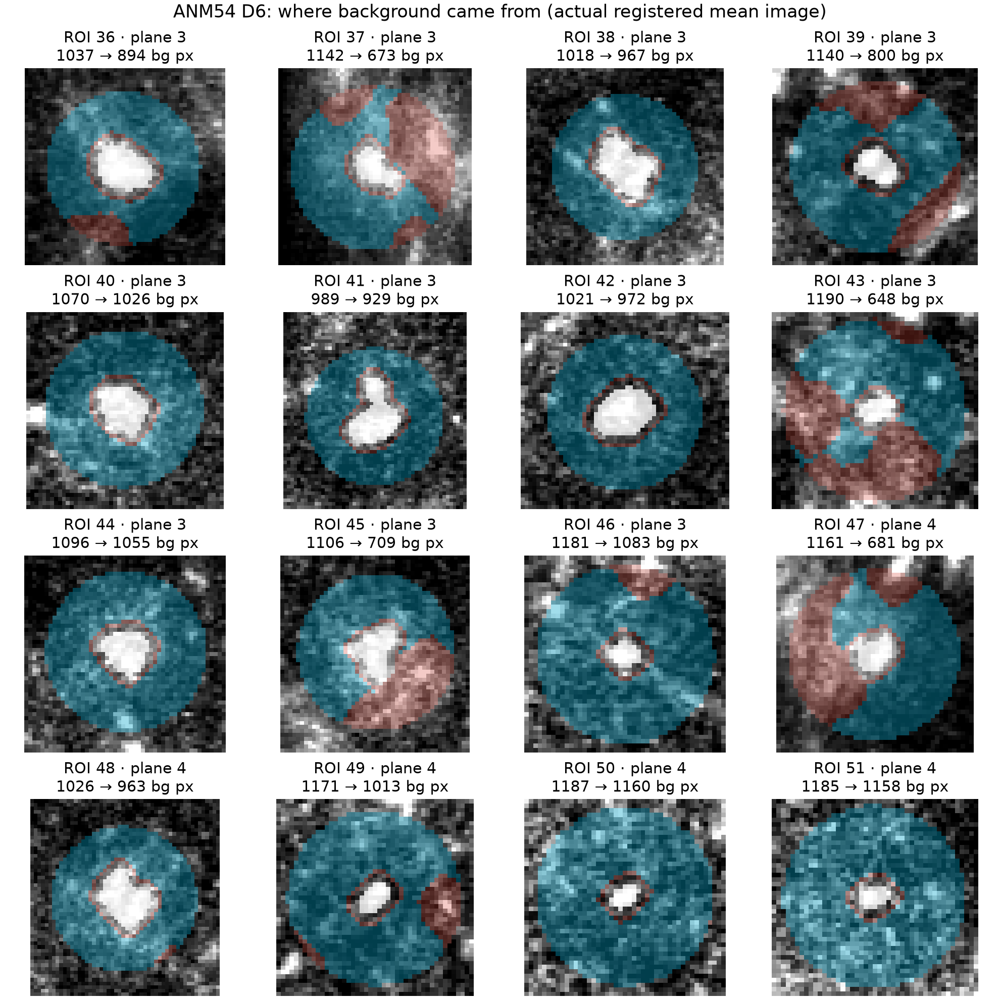
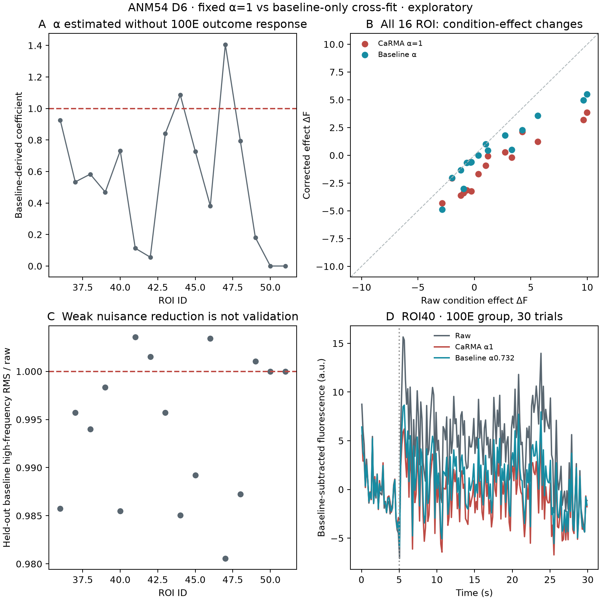

ANM54 D6：背景区域里是否混入细胞样结构？
已直接读取真实注册 TIFF 和 16 个原始 CaRMA ROI，重新生成原始 20 px 背景磁盘、全 ROI 排除 mask，并通过独立的结构图像局部对比度峰值和 watershed 找出疑似细胞亮结构，重新筛除背景像素。

确认：历史算法可重建。 重新从原始 TIFF 提取后，raw signal 与历史背景对应相关性均接近 1，数值差异仅为浮点精度。注意：当前结构候选是图像分割筛查，不能全部称为细胞。Cellpose 已调用，但其预训练权重无法从模型服务器获取，因此尚未完成 Cellpose 分割，不能据此认定生物学问题已经解决。
新结果：60 个 trial 的历史背景减法系数对比
利用原始已抽取的 raw 与背景，采用刺激前 0–5 s 的高频变化，用奇偶 trial 交叉拟合背景系数；没有根据刺激条件对比选择参数。该系数是敏感性分析，不是生物学真值。16 个 ROI 的系数中位数为 0.558；固定 α=1 后原始条件效应符号改变 4 个，交叉拟合系数后改变 1 个。但留出基线差分噪声降低幅度普遍很小，故不能宣称已经完全解决背景问题。

16 个细胞的背景采样像素
| ROI | Plane | ROI px | 原 BG px | 新 BG px | 排除 px | 排除比例 |
|---|---|---|---|---|---|---|
| 36 | 3 | 128 | 1037 | 894 | 143 | 13.8% |
| 37 | 3 | 54 | 1142 | 673 | 469 | 41.1% |
| 38 | 3 | 156 | 1018 | 967 | 51 | 5.0% |
| 39 | 3 | 60 | 1140 | 800 | 340 | 29.8% |
| 40 | 3 | 110 | 1070 | 1026 | 44 | 4.1% |
| 41 | 3 | 158 | 989 | 929 | 60 | 6.1% |
| 42 | 3 | 153 | 1021 | 972 | 49 | 4.8% |
| 43 | 3 | 27 | 1190 | 648 | 542 | 45.5% |
| 44 | 3 | 93 | 1096 | 1055 | 41 | 3.7% |
| 45 | 3 | 76 | 1106 | 709 | 397 | 35.9% |
| 46 | 3 | 30 | 1181 | 1083 | 98 | 8.3% |
| 47 | 4 | 48 | 1161 | 681 | 480 | 41.3% |
| 48 | 4 | 142 | 1026 | 963 | 63 | 6.1% |
| 49 | 4 | 36 | 1171 | 1013 | 158 | 13.5% |
| 50 | 4 | 25 | 1187 | 1160 | 27 | 2.3% |
| 51 | 4 | 27 | 1185 | 1158 | 27 | 2.3% |
原始 CaRMA：以 ROI 原始质心为中心的半径 20 px 磁盘，排除其他已知细胞 masks 外扩 2 px 后取均值，最后 Fcorrected=Fraw−Fbg。独立图像排除：先使用平均成像和高斯差分寻找潜在细胞轮廓，排除其像素并设置安全缓冲，再对同一磁盘剩余位置提取背景。Suite2p 样式：独立建立 ROI 外扩、内径约 2 px 且至少 350 usable pixels 的 neuropil 区域，使用 0.7 系数，不等同于当前历史原生 Suite2p 的 ROI 分割结果。
这里是原始位置和像素筛查。完整 60-trial 的 raw/bg/sub 活动重算与效果对比另行验证，未标记为已完成。